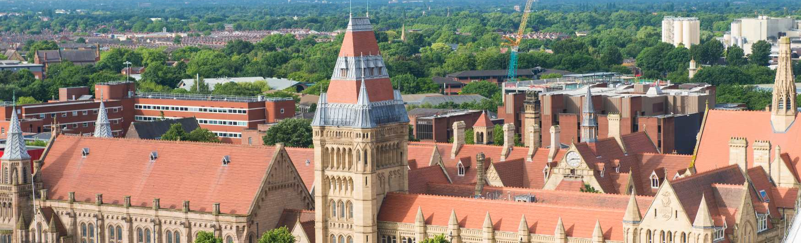

The Formal Methods Engineering (FME) Lab, part of the Software and Systems Security group at the University of Manchester (Department of Computer Science), led by Dominik Winterer, aims at solidifying Formal Methods and other software by automated bug finding.